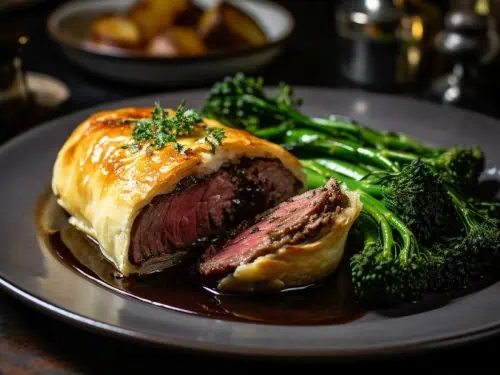

Beef Wellington

Description
Ingredients:
- a good beef fillet
- 3 tbsp olive oil
- 250g/9oz chestnut mushroom
- 50g/2oz butter
- 1 large sprig fresh thyme
- 100ml/3.5 fl oz dry white wine
- 12 slices prosciutto
- 500g/1lb 2oz pack puff pastr
- a little flour
- 2 egg yolks
Steps:
- Heat oven to 220C/fan 200C/gas 7.
- Sit the 1kg beef fillet on a roasting tray, brush with 1 tbsp olive oil and season with pepper, then roast for 15 mins for medium-rare or 20 mins for medium. When the beef is cooked to your liking, remove from the oven to cool, then chill in the fridge for about 20 mins.
- While the beef is cooling, chop 250g chestnut (and wild, if you like) mushrooms as finely as possible so they have the texture of coarse breadcrumbs.
- Heat 2 tbsp of the olive oil and 50g butter in a large pan and fry the mushrooms on a medium heat, with 1 large sprig fresh thyme, for about 10 mins stirring often, until you have a softened mixture.
- Remove the mushroom duxelle from the pan to cool and discard the thyme.